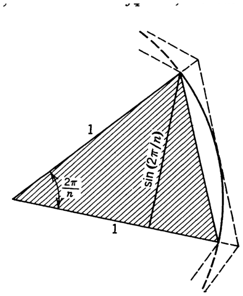

a. 收敛与发散的定义
从第 1.6 节的例子中，可以抽出极限的一般概念。
设有无穷点列 a1,a2,a3,…。如果存在一个数 l，使围绕点 l 的每一个开区间，无论多么小，都包含该点列中除至多有限项以外的一切项，那么就称 l 为数列 a1,a2,… 的极限，并称这个数列收敛，而且收敛于 l。记作 limn→∞an=l。
也可以等价地定义如下。给定任何正数 ε，无论多么小，总能找到一个足够大的整数 N=N(ε)，使得只要 n>N(ε)，就有 ∣an−l∣<ε。
通常，允许的误差 ε 越小，N(ε) 就得取得越大。换言之，当 ε 趋于零时，N(ε) 通常会无限增大。直观上谈极限，容易想象各个 an 正一步步朝 l 移动。在精确的定义里，这个形象被一个“静态”的叙述代替了：l 的每一个邻域都包含除至多有限项以外的全部 an。¹
原注 1 请读者注意这一定义与函数 f(x) 在点 x0 处连续的定义有多么相似。在那里，要找一个足够小的量 δ(ε)；这里相应的角色由足够大的整数 N(ε) 承担。我们将在第 82 页看到，函数在一点的连续性确实可以用数列的极限来表述。
一个数列 a1,a2,… 显然不可能有两个不同的极限。否则，设 l,l′ 都是同一数列的极限，可分别围绕 l 和 l′ 取两个互不相交的开区间。每个区间之外都只剩有限项，而这两个区间又不相交，这个数列便不可能有无穷多项。因此，收敛数列的极限是唯一确定的。
另一个显然而有用的事实是：从收敛数列中删去一些项，只要余下的项仍按原次序构成无穷数列，它就仍然收敛于原来的极限。
不收敛的数列称为发散。若随着 n 增大，an 终将超过任意正的界，就说数列发散到 +∞，写作 limn→∞an=∞，正如我们前面已经几次用过的那样。同理，若 −an 在正向上终将超过任何界，就记作 limn→∞an=−∞。然而发散也可以有别的表现，如 a1=−1,a2=+1,a3=−1,a4=+1,… 的各项就在两个不同的值之间来回摆动。
显然，从数列中删去有限项，对它的收敛或发散都没有影响。
如果有一个有限区间包含数列 a1,a2,… 的所有点，就称数列有界。每个有限区间都能包含在某个以原点为中心的有限区间里。所以数列有界也就是说，存在一个数 M，使一切 n 都满足 ∣an∣≤M。
收敛数列一定有界。设数列的极限为 l。取 ε=1，由收敛的定义，从某个 N 起，所有 an 都落在以 l 为中心、长度为 2 的区间内。可能落在外面的只有 a1,…,aN−1，我们总能把区间取得大一些，把这有限项也都包括进去。
b. 极限的四则运算
从极限的定义可以推出，加、乘、减、除四种基本运算同取极限之间有如下关系。
若数列 a1,a2,… 的极限为 a，数列 b1,b2,… 的极限为 b，则由 cn=an+bn 组成的数列也有极限 c，并且
c=n→∞limcn=a+b.由 cn=anbn 组成的数列也收敛，且 limn→∞cn=ab。同理，若 cn=an−bn，则 limn→∞cn=a−b。只要极限 b 不为零，cn=an/bn 也收敛，并且
n→∞limcn=ba.用话来说，四则运算与取极限的次序可以交换。在上述条件下，先取极限再运算，或先运算再取极限，所得的结果一样。
只要详细证明其中一个法则，其余几个怎样证明也就清楚了。以乘法为例。设 an→a，bn→b。给定正数 ε，只要把 n 取得足够大，例如 n>N(ε)，就可同时保证
∣a−an∣<ε,∣b−bn∣<ε.写成
ab−anbn=b(a−an)+an(b−bn),再回忆存在一个与 n 无关的正界 M，使得 ∣an∣<M，就有
∣ab−anbn∣≤∣b∣∣a−an∣+∣an∣∣b−bn∣<(∣b∣+M)ε.只要 ε 足够小，(∣b∣+M)ε 就可以任意小。因此，对一切充分大的 n，ab 与 anbn 的差确实可以小到我们所希望的程度。这恰好就是 anbn 收敛于 ab 的意思。其余几个运算法则，读者可以仿照这个证明来验证。
利用这些法则，许多极限都容易计算。例如，
n→∞limn2+n+1n2−1=n→∞lim1+n1+n211−n21=1,因为在第二个式子里，可以直接对分子、分母分别取极限。
以下简单的法则也常常有用。若 liman=a，limbn=b，且对每个 n 都有 an>bn，则 a≥b。却不能因此断定 a 总是严格大于 b。例如取 an=1/n、bn=1/(2n)，所得极限就是 a=b=0。
c. 不用预知极限的收敛判别法。单调数列
在前面举过的例子中，所考虑的极限都是已知的数。事实上，要直接按定义验证数列收敛，必须先知道要验证的是哪一个极限。如果数列极限的概念只能告诉我们，某些已知的数可以用某些由其他已知数组成的序列来近似，那么我们从中所得就很有限了。
极限概念在分析中大有用处，原因在于，许多重要问题的数值解既不直接知道，也无法用其他方法表示，却可以描述为一个极限。整个高等分析充满了这样的例子，随后的各章会使这一点越来越清楚。把无理数表示为有理数的极限，便是最初的一个典型例子。
任何由已知数组成的收敛数列 a1,a2,… 都确定一个数 l，即它的极限。但若仅由定义出发，我们只能估计差 ∣an−l∣，这就要先知道 l。因此，我们必须有些“内在的”收敛判别法，只涉及数列本身的各项，无须预先知道极限的值。其中最简单的一条适用于一类特殊的数列——单调数列——并已囊括许多重要的例子。
单调数列的极限
若数列的每一项 an 都大于、至少不小于前一项，即 an≥an−1，就称数列单调递增。同理，若对所有相应下标都有 an≤an−1，就称数列单调递减。单调递增或单调递减的数列统称为单调数列。按此定义，有以下基本原理：
一个数列若既单调又有界，它就收敛。 ¹
直观强烈地提示了这一原理，却没有证明它。它同实数的性质密切相关，事实上，它与实数的连续性公理等价。
不难从有界单调数列收敛推出区间套公设，即每个区间套都有公共点（参见第 1.1 节 b）。设 [a1,b1],[a2,b2],… 是一个区间套。由定义，
a1≤a2≤⋯≤an<bn≤bn−1≤⋯≤b1.无穷数列 a1,a2,… 显然单调递增，对每个 n 又有 a1≤an≤b1，因此它有界。于是 l=limn→∞an 存在。进一步，对每个 m 和每个 n>m 都有
am≤an≤bm.故也有
am≤n→∞liman=l≤bm.所以区间套中的一切区间都包含同一点 l。至于它们不能再有第二个公共点，则由区间套的另一性质 lim(bn−an)=0 得知。
原注 1（第 74 页） 有界的假设至关重要，因为无界数列不可能收敛。注意单调递增数列总有下界：对每个 n，an≥a1。因此，要证明单调递增数列收敛，只需找一个 M，使一切 n 都满足 an≤M。
柯西收敛准则
收敛数列一定有界，却未必单调（见第 62 页的例 b）。处理一般数列时，需要一个也适用于非单调数列的判别法。这正是柯西收敛准则所提供的。它刻画哪些实数列有极限，而且，无须事先知道极限是什么。
数列 a1,a2,… 收敛的充要条件是：下标足够大时，各项彼此之间的差可以任意小。精确地说，若对每个 ε>0，都存在自然数 N=N(ε)，使得每当 n>N 且 m>N 就有 ∣an−am∣<ε，那么数列 an 收敛；反之亦然。
从几何上说，这个条件是：存在任意小的区间，使落在区间外面的数列项只有有限个。柯西准则的证明及其意义，将在补充材料里讨论。
译者注 这里要比较尾部任意两项。只比较相邻两项是不够的。例如调和级数的部分和，相邻两项之差越来越小，但从第 n+1 项加到第 2n 项，仍至少能积出 21 的差距。
d. 无穷级数与求和符号
数列只是依次排列着的无穷多个数 a1,a2,…。写成无穷级数
a1+a2+a3+⋯,则表示要按这些项出现的顺序把它们相加。要赋予无穷级数的和以精确意义，我们考察它的第 n 个部分和，即前 n 项的和
sn=a1+a2+⋯+an.让 n 取不同的值，各部分和便构成一个数列：
s1=a1,s2=a1+a2,s3=a1+a2+a3,等等。若极限存在，就把无穷级数的和 s 定义为
s=n→∞limsn.这时称无穷级数收敛。若数列 sn 发散，就称无穷级数发散。例如，数列 1,q,q2,q3,… 给出无穷几何级数 1+q+q2+q3+⋯，其部分和为 sn=1+q+q2+⋯+qn−1。当 ∣q∣<1 时，sn 收敛于 s=1/(1−q)，这就是级数的和。当 ∣q∣≥1 时，部分和没有有限极限，级数发散（见第 67 页）。
习惯上用
k=1∑nak表示 a1+a2+⋯+an。记号的意思是，让 k 依次取 1 到 n 的整数，把相应的 ak 相加。例如，
k=1∑4k!1表示1!1+2!1+3!1+4!1,而
k=1∑nakb2k表示a1b2+a2b4+a3b6+⋯+anb2n.更一般地，∑k=mnak 表示令 k 依次取 m,m+1,m+2,…,n 所得到的各个 ak 的和。例如，
k=3∑5k!1=3!1+4!1+5!1.这些例子用字母 k 作求和下标，当然，和的值不依赖于所用的是哪个字母。因此
sn=k=1∑nak=i=1∑nai.用记号 ∑k=1∞ak 表示整个无穷级数的和。同样，∑k=0∞ak 表示无穷级数 a0+a1+a2+⋯ 的和，其第 n 个部分和是 sn=a0+a1+a2+⋯+an−1。
用求和记号可以简明地写出前面的许多结果。第 58 页前 n 个正整数平方和的公式成为
k=1∑nk2=6n(n+1)(2n+1).几何级数的求和公式为
k=0∑∞qk=1−q1(∣q∣<1).最后，二项式定理写成
(a+b)n=k=0∑n(kn)an−kbk.无穷级数的和就是数列 sn 的极限，因此也可用数列的收敛判别法来判断级数的收敛性。例如，级数
k=1∑∞kk1=111+221+331+⋯是收敛的，因为部分和
sn=k=1∑nkk1=111+221+331+⋯+nn1随 n 单调递增，并且有界：
1≤sn≤1+221+231+241+⋯+2n1=1+411−211−1/2n−1=1+21−2n1<23.第七章将更系统地研究无穷级数。
e. 数 e
前面谈到，可以用一个数列的极限来定义一个数。作为第一个例子，我们考察
e=1+1!1+2!1+3!1+⋯.也就是说，e 代表 limn→∞Sn，其中¹
Sn=1+1!1+2!1+⋯+n!1.原注 1（第 77 页） 按照 0!=1 的约定，级数的第一项可以写成 1/0!，使它与以下各项服从同一构造法则。照这里的记号，Sn 实际上是无穷级数的第 n+1 个部分和。这个差别无关紧要。
e 与 π 是数学分析中用得最广的两个超越常数。由于 Sn 单调递增，要证明极限 e 存在，只需证明 Sn 有界。对一切 n，
Sn=1+1+21+2⋅31+2⋅3⋅41+⋯+2⋅3⋅4⋅…⋅n1≤1+1+21+221+231+⋯+2n−11=1+1−211−1/2n<3.故 3 是 Sn 的一个上界。有界而单调递增的数列有极限，我们把这个极限记作 e。
e 的级数表示使我们能够很快地把 e 算得相当精确。用部分和 Sm 近似 e 时，误差仍然可以通过同几何级数作比较来估计。刚才求出上界 3 时，我们用的也正是这种方法。对任意 n>m，
Sn=Sm+(m+1)!1+(m+2)!1+⋯+n!1≤Sm+(m+1)!1[1+m+21+(m+2)(m+3)1+⋯]≤Sm+(m+1)!1[1+m+11+(m+1)21+⋯]=Sm+(m+1)!11−m+111=Sm+m1m!1.故 n>m 时，
Sm<Sn≤Sm+m1m!1.固定 m，令 n 无限增大，得到
Sm<e≤Sm+m1m!1.因此 e 与 Sm 最多只差 (1/m)(1/m!)。由于 m! 随 m 增大得极快，取相当小的 m，Sm 就已经是 e 的良好近似。例如，S10 与 e 的差不到 10−7。用这个办法可以得到 e=2.718281…。
e 是无理数。 刚才用 Sm 对 e 所作的估计也能证明这一点。假若 e 是有理数，就可写成 p/m，其中 p,m 为正整数。因 e 在 2 和 3 之间，不会是整数，故 m≥2。把 e 与部分和 Sm 比较，可得
Sm<mp≤Sm+m1m!1.两边乘以 m!，就有
m!Sm<p(m−1)!≤m!Sm+m1<m!Sm+1.然而
m!Sm=m!+m!+2!m!+3!m!+⋯+m!m!是整数，因为和中的每一项都是整数。于是，如果 e 是有理数，整数 p(m−1)! 就将落在两个相邻整数的中间，这是不可能的。¹
原注 1（第 79 页） e 的无理性是指，不存在以 e 为解、系数 a,b 为有理数而且 a=0 的一次方程 ax+b=0。埃尔米特证明了强得多的断言：无论次数 n 为多少，都不存在一个多项式方程 a0xn+a1xn−1+⋯+an−1x+an=0，其系数 a0,a1,…,an 全为有理数，a0=0，而 x=e 是它的根。我们称 e 为超越数。像 2 或 310 这样确实是一元有理系数多项式的根的数，称为代数数。
作为 (1+1/n)n 的极限的 e
我们把数 e 定义为无穷级数的和。它也可以从另一个数列取得：
Tn=(1+n1)n.证明很简单，同时也是运用极限的一个有启发性的例子。由二项式定理，
Tn=(1+n1)n=1+nn1+2!n(n−1)n21+⋯+n!n(n−1)(n−2)⋯1nn1=1+1+2!1(1−n1)+⋯+n!1(1−n1)(1−n2)⋯(1−nn−1).立刻可见 Tn≤Sn<3。由 Tn 得到 Tn+1，只须把因子 1−1/n,1−2/n,… 换成更大的因子 1−1/(n+1),1−2/(n+1),…，最后再添一个正项。故 Tn 也形成单调递增数列，于是极限 limn→∞Tn=T 存在。
要证 T=e，注意当 m>n 时，
Tm>1+1+2!1(1−m1)+⋯+n!1(1−m1)⋯(1−mn−1).固定 n，令 m 无限增大，左边得到 T，右边得到 Sn，因此 T≥Sn。这样，对每一个 n，都有 T≥Sn≥Tn。再使 n 增大，Tn 趋于 T，由这个双重不等式可知 T=limn→∞Sn=e，这就是所要证明的。
以后我们还要从另一个角度遇到数 e（第 2.6 节，第 149 页）。
f. 作为极限的数 π
定义数 π 所用的极限过程，就其实质说，可追溯到古希腊的阿基米德。从几何上说，π 就是半径为 1 的圆的面积。我们把下面的事实视为当然：这个面积能用某个数（有理数或无理数）表示，并用 π 表示它。但是要按给定的精度算出这个数，这样的定义帮不了多大忙。此时必须借助极限过程，把 π 表示为一列已知而且容易计算的数的极限。阿基米德的穷竭法已经用了这个过程。他以正多边形来逼近圆，不断增加边数，使多边形与圆越贴越近。
设 fm 为单位圆的内接正 m 边形的面积。内接正 2m 边形的面积由下式给出。这一公式可用初等几何证明，也可从 fn=(n/2)sin(2π/n) 推得（图 1.46）：
f2m=2m2−21−(2fm/m)2.现在让 m 依次取 2 的幂，即 m=2n，而不遍取所有正整数。换句话说，我们反复平分圆弧，用所得到的点作为新正多边形的顶点。从几何意义看，f2n 构成一个递增而有界的数列，从而有极限，这个极限就是圆面积：
π=n→∞limf2n.这种极限表示确实可以作为数值计算的依据。从 f4=2 出发，便能依次算出趋于 π 的数列的各项。要估计任意一项 f2n 逼近 π 的精度，可以作圆的切线，分别与内接正 2n 边形的各边平行。这些切线围成一个外切正多边形，它与内接正多边形相似，对应长度之比为 1:cos(π/2n)。故外切正多边形的面积 F2n 可由以下比例求得：
F2nf2n=(cos2nπ)2.
图 1.46
外切多边形的面积比圆面积大，故
f2n<π<F2n=(cos2nπ)2f2n=1+1−(f2n/2n−1)22f2n.例如，f8=22，所以得到估计
22<π<1+21242.这些事情，读者大概已多少有些熟悉。这里要请读者留意的是：用面积容易算出的直线形去穷竭一个图形，从而算出它的面积，这个思想正是第二章所要引入的积分概念的基础。要实际计算 π 的数值，还有效率高得多的方法，我们将在第 6.2 节 b 中见到。